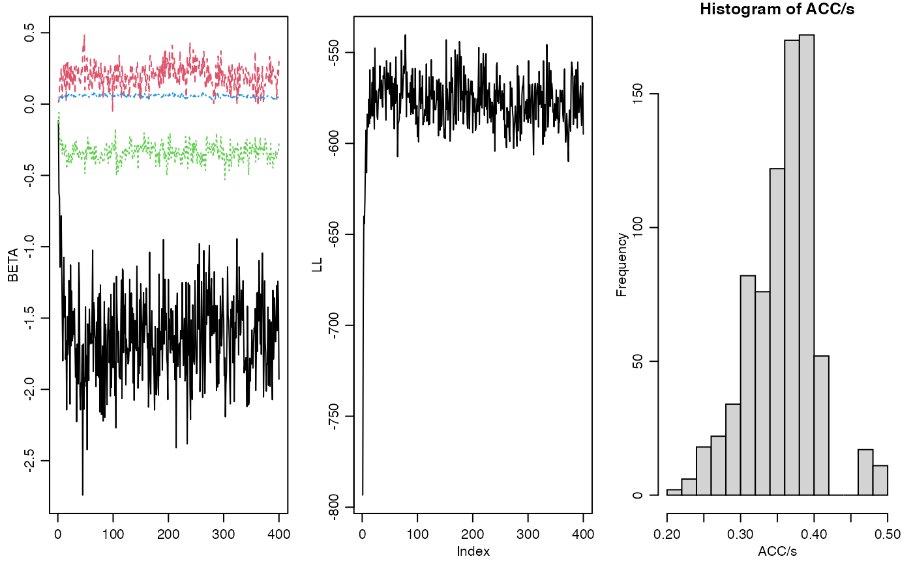

vignettes/diy_Poisson_demo.Rmd
diy_Poisson_demo.RmdMany network outcomes are counts, such as the number of emails between individuals or the number of conflicts between countries. One way to model such outcomes is to treat them as ordinal and fit an ordinal probit model. This can be done with the ame command using the family=ord option. However, the MCMC algorithm for this model can take a long time to run, and can mix poorly if the data do not contain much information. In such cases, it may be preferable to use a more parametric approach, such as a Poisson regression model.
In this tutorial, I illustrate how to fit an overdispersed Poisson model to some network data with a count outcome, using the functions provided by the amen package. The model we will fit is the following:
\[ \begin{align*} z_{i,j} & = \beta^\top x_{i,j} + a_i +b_j + u_i^\top v_j + \epsilon_{i,j} \\ y_{i,j}|z_{i,j} & \sim \text{Poisson}( e^{z_{i,j}} ) \end{align*} \] where \(\text{Var}{ (\begin{smallmatrix} a_i \\ b_i \end{smallmatrix} ) } = \Sigma_{ab}\), \(\text{Var}{ (\begin{smallmatrix} u_i \\ v_i \end{smallmatrix} ) } = \Sigma_{uv}\), and \[ \text{Var}{ ( \begin{smallmatrix} \epsilon_{i,j} \\ \epsilon_{j,i}\end{smallmatrix}) } = \Sigma_\epsilon = \sigma^2 \begin{pmatrix} 1 & \rho \\ \rho & 1 \end{pmatrix}. \] We can think of the parameter \(\sigma^2\) here as an overdispersion parameter, in the sense that if \(\sigma^2\) were zero, then \(y_{i,j}\) would be Poisson with mean \(\exp( \beta^\top x_{i,j} + a_i +b_j + u_i^\top v_j)\). On the other hand, if \(\sigma^2\) is large then the variance of \(y_{i,j}\) will be larger than \(\exp(\beta^\top x_{i,j} + a_i +b_j + u_i^\top v_j)\).
We will construct a Gibbs sampler to approximate the joint posterior distribution of all unknown quantities, which includes
the global parameters \(\beta, \Sigma_{ab}, \Sigma_{uv}, \sigma^2, \rho\);
the latent nodal effects \(\{ (a_i, b_i, u_i, v_i): i=1,\ldots, n\}\);
the unobserved latent dyadic variables \(z_{i,j}\).
We will fit a rank-1 AMEN model to the dataset on sheep dominance encounters that is included with the amen package:
## V1 V2 V3 V4 V5 V6 V7 V8
## [1,] NA 0 0 0 0 0 0 1
## [2,] 0 NA 0 0 5 2 1 0
## [3,] 0 0 NA 0 7 4 0 0
## [4,] 0 0 8 NA 0 0 0 0
## [5,] 0 0 0 0 NA 1 0 0
## [6,] 0 0 0 7 0 NA 0 0
## [7,] 0 0 1 0 0 0 NA 0
## [8,] 0 1 1 4 5 3 0 NA
age[1:8]## [1] 9 8 9 9 7 8 9 9Here, \(y_{i,j}\) is the number of times sheep \(i\) “dominated” sheep \(j\) over some time period, and \(x_i\) is the age of sheep \(i\) in years.
Roughly speaking, older sheep dominate younger sheep.
Let’s fit a model for \(y_{i,j}\) with main and interaction effects of age. Let \(x_{i} = \text{age}_i - \bar{\text{age}}\) be the centered age variable, and let \(x_{i,j} = ( x_i , x_j, x_i x_j)\).
The corresponding design matrix can be constructed as follows:
x<-sheep$age - mean(sheep$age)
X<-design_array(Xrow=x,Xcol=x,Xdyad=outer(x,x)) Now we need some starting values for some of the unknown quantities in the model:
Z<-log(Y+1) ; diag(Z)<-0
Sab<-diag(2)
R<-1 ; Suv<-diag(2*R) ; U<-V<-matrix(0,nrow(Y),R)
s2<-1 ; rho<-0Now if we observed \(Z\) and assumed it followed the AME model above, we could just use the following MCMC algorithm to approximate the joint posterior distribution of the AME model parameters:
for(s in 1:10)
{
# update beta, a and b
tmp<-rbeta_ab_fc(Z,Sab,rho,X,s2,offset=U%*%t(V))
beta<-tmp$beta ; a<-tmp$a ; b<-tmp$b
# update UV
tmp<-rUV_fc(Z,U,V,Suv,rho,offset=Xbeta(X,beta)+outer(a,b,"+"))
U<-tmp$U ; V<-tmp$V
# update Sab
Sab<-rSab_fc(a,b)
# update Suv
Suv<-rSuv_fc(U,V)
# update s2
s2<-rs2_fc(Z,rho,offset=Xbeta(X,beta)+outer(a,b,"+")+U%*%t(V))
# update rho
rho<-rrho_mh(Z,rho,s2,offset=Xbeta(X,beta)+outer(a,b,"+")+U%*%t(V))
}However, in our model \(Z\) is the matrix of unknown log expectations of the elements of \(Y\). To account for the fact that \(Z\) is unknown, we need to integrate/simulate over the possible values of \(Z\) in the Markov chain. This can be done by adding a Metropolis update for \(Z\) to the above MCMC algorithm. We do this as follows:
Simulate a candidate value for each \(z_{i,j}\): \(z^*_{i,j} \sim N(z_{i,j}, c \sigma^2 )\), where \(c\) is a tuning parameter.
Replace the pair \((z_{i,j},z_{j,i})\) with the proposed values \((z_{i,j}^*,z_{j,i}^*)\) if \[ \log \frac{ p(y_{i,j} | z_{i,j}^* ) p(y_{j,i} | z_{j,i}^* ) p(z_{i,j}^*,z_{j,i}^*) } { p(y_{i,j} | z_{i,j} ) p(y_{j,i} | z_{j,i} ) p(z_{i,j},z_{j,i}) } > \log h \] where \(h \sim U(0,1)\). Here \(p(z_{i,j}, z_{j,i} )\) is the joint density of \((z_{i,j},z_{j,i})\) conditional on \(\beta, a_i, b_i, u_i, v_i, a_j,b_j, u_j, v_j\) and \(\rho\) and \(\sigma^2\). This joint density is not exotic: it is simply a bivariate normal density for \((z_{i,j}, z_{j,i} )\) where the mean vector is \(( \beta^\top x_{i,j} +a_i+b_j +u_i^\top v_j , \beta^\top x_{j,i} +a_j+b_i +u_j^\top v_i )\) and covariance matrix \(\Sigma_\epsilon\).
Calculation of the log numerator (and denominator) in the above ratio can be done with the amen function ldZgbme. The letters stand for “log density of Z from a gbme model”. You can search the web for more on gbme models. In R, updating \(Z\) using this procedure looks like the following:
# propose candidate Z
Zp<-Z+matrix(rnorm(nrow(Y)^2),nrow(Y),nrow(Y))*sqrt(s2)
# compute acceptance ratio
EZ<-Xbeta(X,beta)+outer(a,b,"+")+U%*%t(V)
lr<-ldZgbme(Zp,Y,function(y,z){ dpois(y,exp(z),log=TRUE) },EZ,rho,s2) -
ldZgbme(Z, Y,function(y,z){ dpois(y,exp(z),log=TRUE) },EZ,rho,s2)
# simulate symmetric matrix of (log) uniform rvs
lh<-matrix(log(runif(nrow(Y)^2)),nrow(Y),nrow(Y))
lh[lower.tri(lh)]<-t(lh)[lower.tri(lh)]
# update dyads for which lr>lh, and keep track of acceptances
Z[lr>lh]<-Zp[lr>lh]Note that the ldZgbme function takes as an argument a function that specifies the log density (or mass) function for each \(y_{i,j}\) given \(z_{i,j}\). So for our Poisson model, this function is function(y,z){ dpois(y,exp(z),log=TRUE) }. You can fit other types of models by specifying different log density functions.
Let’s implement this:
#### Starting values
Z<-log(Y+1) ; diag(Z)<-0
Sab<-diag(2)
R<-1 ; Suv<-diag(2*R) ; U<-V<-matrix(0,nrow(Y),R)
s2<-1 ; rho<-0
#### Parameter values to be saved
BETA<-VE<-LL<-NULL
ACC<-matrix(0,nrow(Y),nrow(Y))
#### MCMC
set.seed(1)
for(s in 1:10000)
{
## Update AMEN parameters
# update beta, a and b
tmp<-rbeta_ab_fc(Z,Sab,rho,X,s2,offset=U%*%t(V))
beta<-tmp$beta ; a<-tmp$a ; b<-tmp$b
# update UV
tmp<-rUV_fc(Z,U,V,Suv,rho,offset=Xbeta(X,beta)+outer(a,b,"+"))
U<-tmp$U ; V<-tmp$V
# update Sab
Sab<-rSab_fc(a,b)
# update Suv
Suv<-rSuv_fc(U,V)
# update s2
s2<-rs2_fc(Z,rho,offset=Xbeta(X,beta)+outer(a,b,"+")+U%*%t(V))
# update rho
rho<-rrho_mh(Z,rho,s2,offset=Xbeta(X,beta)+outer(a,b,"+")+U%*%t(V))
## Update Z
# propose candidate Z
Zp<-Z+matrix(rnorm(nrow(Y)^2),nrow(Y),nrow(Y))*sqrt(s2)
# compute acceptance ratio
EZ<-Xbeta(X,beta)+outer(a,b,"+")+U%*%t(V)
lr<-ldZgbme(Zp,Y,function(y,z){ dpois(y,exp(z),log=TRUE) },EZ,rho,s2) -
ldZgbme(Z, Y,function(y,z){ dpois(y,exp(z),log=TRUE) },EZ,rho,s2)
# simulate symmetric matrix of (log) uniform rvs
lh<-matrix(log(runif(nrow(Y)^2)),nrow(Y),nrow(Y))
lh[lower.tri(lh)]<-t(lh)[lower.tri(lh)]
# update dyads for which lr>lh, and keep track of acceptances
Z[lr>lh]<-Zp[lr>lh]
ACC[lr>lh]<-ACC[lr>lh]+1
## Output
if(s%%25==0)
{
cat(s,range(ACC/s),"\n")
BETA<-rbind(BETA,beta)
VE<-rbind(VE,c(s2,rho))
par(mfrow=c(1,3),mar=c(3,3,1,1),mgp=c(1.75,.75,0))
matplot(BETA,type="l")
LL<-c(LL,sum(dpois(Y,exp(Z),log=TRUE),na.rm=TRUE)) ; plot(LL,type="l")
hist(ACC/s)
}
}
Let’s interpret the parameter estimates:
apply(BETA,2,mean)## [1] -1.62872581 0.19926245 -0.33723549 0.05615933
apply(BETA,2,sd)## [1] 0.31035583 0.08344497 0.05881178 0.01047963So the older a sheep is, the more likely it is do dominate others, and the younger a sheep is, the more likely it is to be dominated. Also, the interaction term suggests some homophily on age in terms of number of dominance encounters.
apply(VE,2,mean) ## [1] 0.9692351 -0.7259700
apply(VE,2,sd) ## [1] 0.1199476 0.1731239There is a strong negative dyadic correlation for these data, reflecting that if \(i\) dominates \(j\) frequently, \(j\) dominates \(i\) less frequently than expected based on the age effects and random effects.